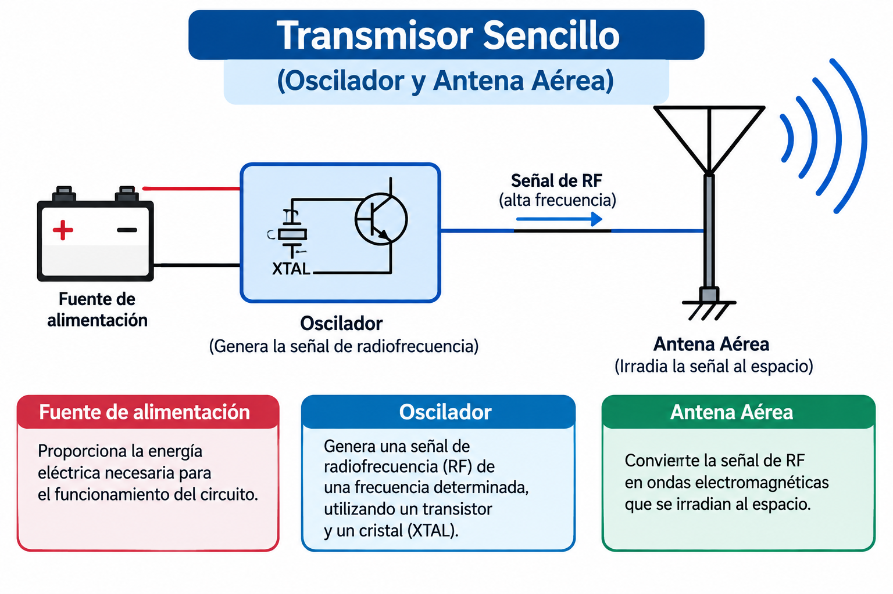
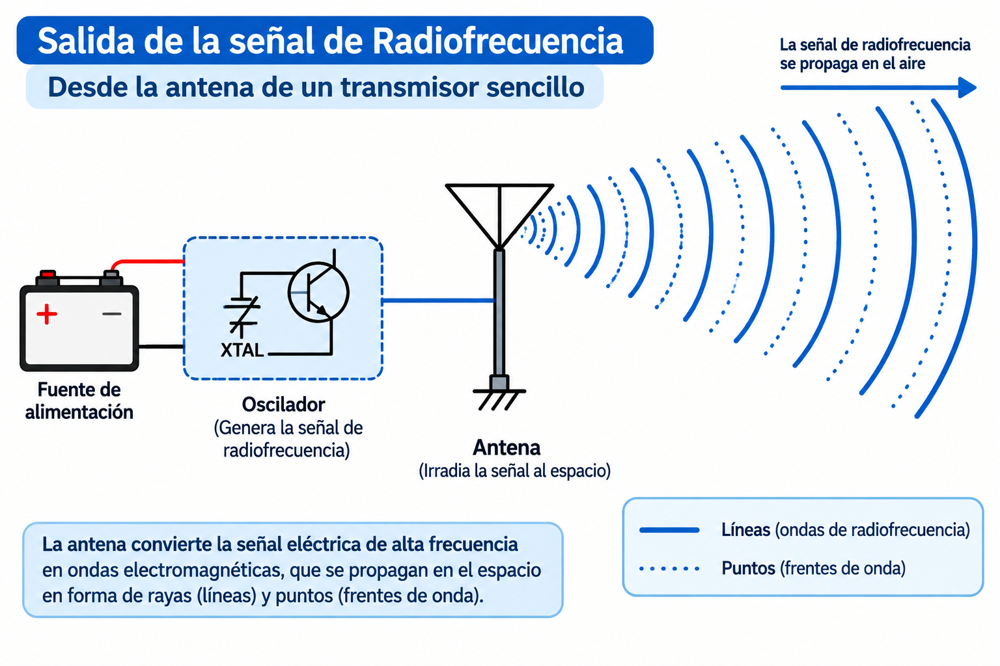
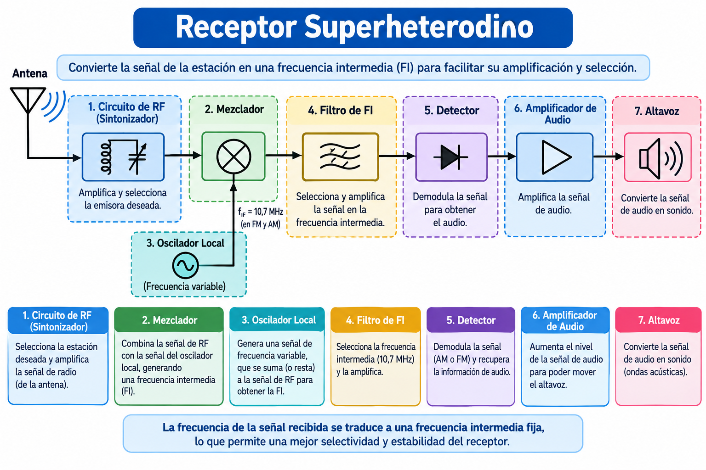
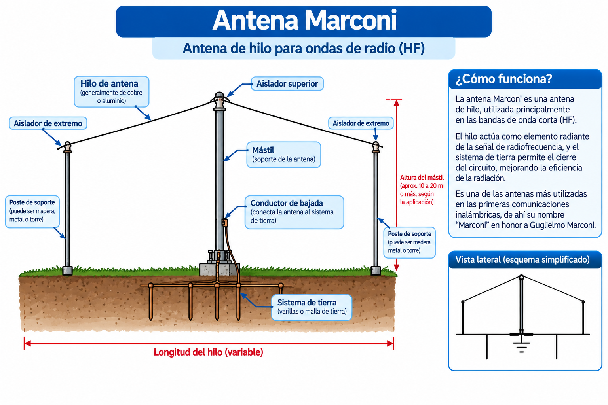
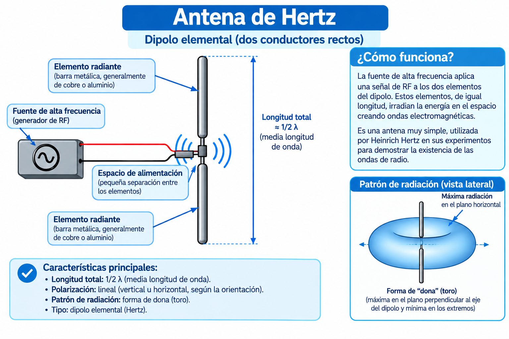

2. Equipos de Radio y Frecuencias
En este módulo conoceremos cómo funciona un equipo de radio, sus componentes básicos, los controles que debemos manejar como operadores y los conceptos fundamentales sobre frecuencias y antenas.
2.1 ¿Qué es un equipo de radio recepción y transmisión?
Es posible que muy pocos hayan tenido contacto directo con transmisores. Para muchos, la palabra misma es poco familiar. Sin embargo, en ocasiones hemos hecho referencia a un tipo de transmisor o a otro, llamándolo estación de radio o estación difusora.
Cuando escuchamos un radio, las señales que recibimos llegan al radiorreceptor a través del espacio. El transmisor más sencillo consiste en un oscilador que genera una señal de alta frecuencia. El oscilador se puede conectar a una antena para completar el transmisor. La antena, en este caso, irradia la señal con una intensidad igual a la del oscilador.

Figura 1. Transmisor Sencillo (Fuente: Manual de Telecomunicaciones para Radio Operador de Despacho).
Sin un radiorreceptor que capte la señal del transmisor no oiríamos nada, pero si percibiríamos un sonido agudo y continuo. Para añadir inteligencia a la señal, el oscilador tendría que interrumpir en forma predeterminada la señal para producir sonidos cortos y largos, los cuales equivaldrían a puntos (los cortos) y rayas (los largos) — el principio del código Morse.

Figura 2. Transmisor Sencillo emitiendo señal de alta frecuencia.
Potencia
Para darle un poco más de potencia al transmisor, es necesario colocarle una serie de amplificadores hasta obtener un nivel adecuado. Tendríamos así el oscilador (que genera la señal), más la primera etapa de amplificación, y esta a su vez es amplificada por siguientes etapas hasta obtener una potencia lo suficientemente fuerte que es emitida al espacio.
Receptor Superheterodino
El receptor más sencillo es el llamado detector o cristal, que consiste en una antena aérea, una bobina, unos audífonos y un diodo detector. A partir de este sencillo detector se desarrolla todo receptor que hoy usamos: el Superheterodino.

Figura 3. Receptor Superheterodino (Fuente: Manual de Telecomunicaciones para Radio Operador de Despacho).
Si combinamos, con un selector conmutable (un switch), las etapas de receptor y transmisor, tendremos un equipo completo para Comunicación (Transmisor - Receptor).
2.2 Tipos de Radio Receptores y Transmisores
Equipos Portátiles
Entiéndase por estación destinada a ser utilizada en movimiento o mientras esté detenida en puntos no determinados, compuesta por equipos fácilmente transportables. El equipo y su sistema irradiante (antena) están unidos en un solo cuerpo, lo cual le hace especialmente fácil y cómodo de utilizar.
La mayoría de las instituciones cuentan con modelos de radios portátiles, tales como los siguientes: Motorola P-200, Yaesu FT-23R, Yaesu FT-26, Motorola SP-50.
Todos los anteriores modelos son poseedores de los siguientes controles: Volumen, Squelch, Dial; además, algunos tienen funciones alternas como bipper, llamada selectiva, monitoreo de canal prioritario y otras.
Equipos Móviles
Entiéndase por estación determinada a ser usada en un vehículo en movimiento. El equipo y su sistema irradiante (antena) están separados, lo que hace que sea usado solo en vehículos. Las instituciones de socorro cuentan con este tipo de equipo en sus vehículos asistenciales; entre los más usados están los equipos Motorola M-214 - GM-300, por ser modelos de fácil manejo.
Equipos Fijos
Se entiende por equipo fijo al que se usa en la consola y que por sus características técnicas y sistema irradiante (antena) es de difícil traslado de un lugar a otro. Por ejemplo, los que usan formaciones directivas, torres, etc. En esta clasificación se pueden agrupar las estaciones de enlace con las sedes nacionales de algunas entidades. Por lo general, son equipos de gran tamaño y con un gran número de funciones.
2.3 Controles de un Equipo de Radio
No todos los equipos de radio tienen igual cantidad de funciones y controles, pero sí tienen algunos controles comunes que hacen funciones específicas:
- Encendido: Su función es permitir el paso de la corriente eléctrica en los componentes del equipo. Se le denomina "cerrar el circuito" o energizar el equipo.
- Control de Audio Frecuencia (Volumen): Ajusta a un nivel de sonido agradable el audio del equipo.
- Selector de Canales (Dial): Permite seleccionar la frecuencia o el canal que vamos a utilizar.
- Squelch (Estrangulador): No permite sonido alguno mientras está activado. Solo se escuchará sonido cuando la señal sobrepase el nivel ajustado previamente.
Recomendación
Para un mejor manejo del equipo de radio, es recomendable que se tenga muy en cuenta y se LEA el MANUAL DE INSTRUCCIÓN del equipo a usar.
2.4 ¿Qué es una Frecuencia Radial?
Para saber qué es una frecuencia, debemos tener definido qué es una onda de radio. La onda es una forma especial de movimiento vibratorio que se propaga por el medio desde donde se origina.
Existen ondas materiales (como el sonido), que se propagan por las vibraciones de la materia y no pueden propagarse en el vacío; y las ondas electromagnéticas, que no necesitan de medio material para propagarse, por lo tanto pueden hacerlo en el vacío.
La velocidad de propagación de las ondas electromagnéticas es aproximadamente 300.000 Km/segundo. La Frecuencia es el número de oscilaciones por segundo y se mide en Hertz. La Longitud de onda es la distancia recorrida en cada oscilación.
Las magnitudes que frecuentemente investigaremos son la Frecuencia y la Longitud de Onda. Las fórmulas para despejarlas son:
Frecuencia en Megahertz = 300 / Longitud de Onda en Metros
Longitud de Onda en metros = 300 / Fcia en Megahertz (MHz)
2.5 Tipos o Rangos de Frecuencias Radial
La agrupación de los rangos de frecuencias se denomina espectro radioeléctrico, el cual se agrupa así:
| Gama de Fcia | Abreviatura | Calificativa | Subdivisión Métrica |
|---|---|---|---|
| 3 a 30 KHz | VLF | Frecuencia Muy Baja | Ondas Miriométricas |
| 30 a 300 KHz | LF | Frecuencia Baja | Ondas Kilométricas |
| 300 a 3.000 KHz | MF | Frecuencia Media | Ondas Hectométricas |
| 3 a 30 MHz | HF | Frecuencia Alta | Ondas Decamétricas |
| 30 a 300 MHz | VHF | Frecuencia Muy Alta | Ondas Métricas |
| 300 a 3.000 MHz | UHF | Frecuencia Ultra Alta | Ondas Decimétricas |
| 3 a 30 GHz | SHF | Frecuencia Súper Alta | Ondas Centimétricas |
| 30 a 300 GHz | EHF | Frecuencia Extremadamente Alta | Ondas Milimétricas |
2.6 Función y Tipos de Antenas
Antena: Es la porción del conjunto que irradia la energía de RF (Radio Frecuencia) y la que convierte esta energía en ondas electromagnéticas. Este conjunto está formado por la línea de transmisión y la formación metálica.
Hay muchos tipos de antenas. Los dos tipos más comunes son la antena MARCONI y la antena HERTZ.
Antena Marconi
También llamada antena puesta a tierra. Consiste en un simple alambre al cual se le suministra energía de alta frecuencia cerca de su extremo de tierra. La longitud eléctrica de esta antena debe ser normalmente un cuarto de longitud de onda (λ/4).

Figura 4. Antena Marconi (Fuente: Manual de Telecomunicaciones para Radio Operador de Despacho).
Antena Hertz
Al contrario que la Marconi, funciona sin conexión a tierra. La energía de alta frecuencia se aplica en el centro de la antena. La longitud del conductor es igual a múltiplos de media longitud de onda a irradiar (λ/2).

Figura 5. Antena Hertz (Fuente: Manual de Telecomunicaciones para Radio Operador de Despacho).
Antenas Direccionales
Con base en los dos tipos anteriores, se desarrollan un sinnúmero de modelos de los cuales el más destacado son las formaciones direccionales o directivas. Proporcionan ciertas ventajas, como la llamada "ganancia sobre el dipolo básico", pudiéndose tener ganancias de 15 o 20 decibelios.

Figura 6. Antena Direccional (Fuente: Manual de Telecomunicaciones para Radio Operador de Despacho).
🎧 Escucha la teoría completa del módulo:
(Audio en proceso de grabación)
Video 1. Introducción a los equipos de radio (Espacio reservado para tu video).